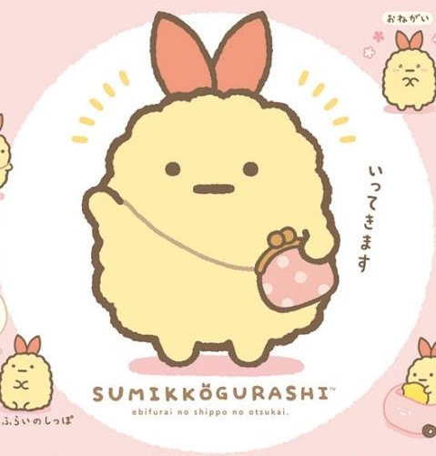

5月17日下午6:12 ·
為了女兒，我說不定連魔王都能幹掉
勇者迪爾與魔人族少女拉提娜的故事
- 故事簡介 -
以高超的戰鬥技巧及判斷力為武器，年紀輕輕就小有名氣的青年冒險者，迪爾。為了執行某次委託而進到深邃森林中的他，在那裡遇見了骨瘦如柴的年幼魔人族少女，拉提娜，並決心要成為她的監護人！相遇時渾身髒兮兮，講話也結結巴巴的拉提娜，但在迪爾及他的朋友們照料之下，重回了原先可愛的模樣……！看著一天天成長的「我家女兒」，溫馨奇幻故事登場！
- 主要登場人物 -
- 迪爾·雷齊
- 拉提娜·木托
- 莉塔·古倫格
- 肯尼斯·古倫格
在某次討伐魔獸的任務中，在「庫羅茲」的西南方森林撿到年幼的拉提娜，順勢成為拉提娜監護人。雖然是實力非凡的冒險者，但在面對拉提娜時就會完全變成溺愛女兒的傻瓜父親。對接近拉提娜的任何男性都抱有著敵意。
在7歲時遭到故鄉「凡斯略」流放，後被迪爾所撿到的魔人族少女，拉古的女兒，迪爾之養女，坦率善良又聰明，學習能力異常的強大，擁有「天」和「冥」屬性魔法。從小便展顯出驚人的魔法操控力，但也有意外頑固的一面。
肯尼斯的妻子，同時也是「躍動的虎貓亭」中的招牌女侍，由於喜歡小孩，因此相當疼愛拉提娜。當虎貓亭的會計跟處理綠之神的傳言版，強悍的個性有時連店裡兇悍魯莽的冒險者都退避三舍。與肯尼斯育有兩個孩子。
迪爾所下榻的旅館「躍動的虎貓亭」的老闆，與妻子一同照料迪爾與拉提娜的生活。曾與迪爾一同冒險，算是迪爾的老大哥也是拉緹娜尊敬的老師，從冒險者生活退休以料理人的身分來度過剩下的人生。與莉塔育有兩個孩子。